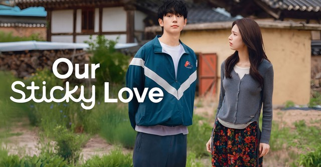

Nombre: Genesis Chafla
Acaramelados es una serie coreana que combina romance, comedia y misterio.
La historia comienza cuando Go Eun-sae pierde la memoria y despierta sin recordar quién es.

Jang Tae-ha aparece en su vida y asegura que es su novio. A partir de ese momento, ambos comienzan a vivir una historia llena de dudas y situaciones inesperadas.
Mientras Eun-sae intenta recuperar sus recuerdos, descubre poco a poco secretos relacionados con su pasado.
La serie muestra confianza, sentimientos, recuerdos y las dificultades que enfrentan los protagonistas.